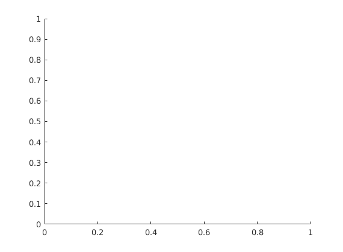

function varargout = boundedline(varargin)
tmp = strncmpi(varargin,'color',3);
if any(tmp)
varargin{tmp} = 'cmap';
end
isalpha = cellfun(@(x) ischar(x) && strcmp(x, 'alpha'), varargin);
if any(isalpha)
usealpha = true;
varargin = varargin(~isalpha);
else
usealpha = false;
end
isax = cellfun(@(x) isscalar(x) && ishandle(x) && strcmp('axes', get(x,'type')), varargin);
if any(isax)
hax = varargin{isax};
varargin = varargin(~isax);
else
hax = gca;
end
[found, trans, varargin] = parseparam(varargin, 'transparency');
if ~found
trans = 0.2;
end
if ~isscalar(trans) || trans < 0 || trans > 1
error('Transparency must be scalar between 0 and 1');
end
[found, orient, varargin] = parseparam(varargin, 'orientation');
if ~found
orient = 'vert';
end
if strcmp(orient, 'vert')
isvert = true;
elseif strcmp(orient, 'horiz')
isvert = false;
else
error('Orientation must be ''vert'' or ''horiz''');
end
[hascmap, cmap, varargin] = parseparam(varargin, 'cmap');
[found, nanflag, varargin] = parseparam(varargin, 'nan');
if ~found
nanflag = 'fill';
end
if ~ismember(nanflag, {'fill', 'gap', 'remove'})
error('Nan flag must be ''fill'', ''gap'', or ''remove''');
end
[haslw, lwidth, varargin] = parseparam(varargin, 'linewidth');
if ~haslw
lwidth = get(0, 'DefaultLineLineWidth');
end
[x,y,err,linespec] = deal(cell(0));
while ~isempty(varargin)
if length(varargin) < 3
error('Unexpected input: should be x, y, bounds triplets');
end
if all(cellfun(@isnumeric, varargin(1:3)))
x = [x varargin(1)];
y = [y varargin(2)];
err = [err varargin(3)];
varargin(1:3) = [];
else
if any(cellfun(@(x) isa(x, 'datetime'), varargin(1:3)))
error('boundedline cannot support datetime input due to incompatibility between patches and datetime axes; please convert to datenumbers instead');
else
error('Unexpected input: should be numeric x, y, bounds triplets');
end
end
if ~isempty(varargin) && ischar(varargin{1})
linespec = [linespec varargin(1)];
varargin(1) = [];
else
linespec = [linespec {[]}];
end
end
plotdata = cell(0,7);
htemp = figure('visible', 'off');
for ix = 1:length(x)
try
if isempty(linespec{ix})
hltemp = plot(x{ix}, y{ix});
else
hltemp = plot(x{ix}, y{ix}, linespec{ix});
end
catch
close(htemp);
error('X and Y matrices and/or linespec not appropriate for line plot');
end
linedata = get(hltemp, {'xdata', 'ydata', 'marker', 'linestyle', 'color'});
nline = size(linedata,1);
if nline > 1
if ndims(err{ix}) == 3
err2 = squeeze(num2cell(err{ix},[1 2]));
else
err2 = repmat(err(ix),nline,1);
end
else
err2 = err(ix);
end
[lo, hi] = deal(cell(nline,1));
for iln = 1:nline
x2 = linedata{iln,1};
y2 = linedata{iln,2};
nx = length(x2);
if isvert
lineval = y2;
else
lineval = x2;
end
sz = size(err2{iln});
if isequal(sz, [nx 2])
lo{iln} = lineval - err2{iln}(:,1)';
hi{iln} = lineval + err2{iln}(:,2)';
elseif isequal(sz, [nx 1])
lo{iln} = lineval - err2{iln}';
hi{iln} = lineval + err2{iln}';
elseif isequal(sz, [1 2])
lo{iln} = lineval - err2{iln}(1);
hi{iln} = lineval + err2{iln}(2);
elseif isequal(sz, [1 1])
lo{iln} = lineval - err2{iln};
hi{iln} = lineval + err2{iln};
elseif isequal(sz, [2 nx])
lo{iln} = lineval - err2{iln}(:,1);
hi{iln} = lineval + err2{iln}(:,2);
elseif isequal(sz, [1 nx])
lo{iln} = lineval - err2{iln};
hi{iln} = lineval + err2{iln};
elseif isequal(sz, [2 1])
lo{iln} = lineval - err2{iln}(1);
hi{iln} = lineval + err2{iln}(2);
else
error('Error bounds must be npt x nside x nline array');
end
end
plotdata = [plotdata; linedata lo hi];
end
close(htemp);
if hascmap
nd = size(plotdata,1);
cmap = repmat(cmap, ceil(nd/size(cmap,1)), 1);
cmap = cmap(1:nd,:);
plotdata(:,5) = num2cell(cmap,2);
end
nline = size(plotdata,1);
[xl, yl, xp, yp, marker, lnsty, lncol, ptchcol, alpha] = deal(cell(nline,1));
for iln = 1:nline
xl{iln} = plotdata{iln,1};
yl{iln} = plotdata{iln,2};
[xp{iln}, yp{iln}] = calcpatch(plotdata{iln,1}, plotdata{iln,2}, isvert, plotdata{iln,6}, plotdata{iln,7}, nanflag);
marker{iln} = plotdata{iln,3};
lnsty{iln} = plotdata{iln,4};
if usealpha
lncol{iln} = plotdata{iln,5};
ptchcol{iln} = plotdata{iln,5};
alpha{iln} = trans;
else
lncol{iln} = plotdata{iln,5};
ptchcol{iln} = interp1([0 1], [1 1 1; lncol{iln}], trans);
alpha{iln} = 1;
end
end
if verLessThan('matlab', '8.4.0')
[hp,hl] = deal(zeros(nline,1));
else
[hp,hl] = deal(gobjects(nline,1));
end
for iln = 1:nline
hp(iln) = patch(xp{iln}, yp{iln}, ptchcol{iln}, ...
'facealpha', alpha{iln}, ...
'edgecolor', 'none', ...
'parent', hax);
end
for iln = 1:nline
hl(iln) = line(xl{iln}, yl{iln}, ...
'marker', marker{iln}, ...
'linestyle', lnsty{iln}, ...
'color', lncol{iln}, ...
'linewidth', lwidth, ...
'parent', hax);
end
nargoutchk(0,2);
if nargout >= 1
varargout{1} = hl;
end
if nargout == 2
varargout{2} = hp;
end
function [found, val, vars] = parseparam(vars, param)
isvar = cellfun(@(x) ischar(x) && strcmpi(x, param), vars);
if sum(isvar) > 1
error('Parameters can only be passed once');
end
if any(isvar)
found = true;
idx = find(isvar);
val = vars{idx+1};
vars([idx idx+1]) = [];
else
found = false;
val = [];
end
function [xp, yp] = calcpatch(xl, yl, isvert, lo, hi, nanflag)
ismissing = isnan([xl;yl;lo;hi]);
if any(ismissing(:)) && strcmp(nanflag, 'gap')
tmp = [xl;yl;lo;hi];
idx = find(any(ismissing,1));
n = diff([0 idx length(xl)]);
tmp = mat2cell(tmp, 4, n);
isemp = cellfun('isempty', tmp);
tmp = tmp(~isemp);
tmp = cellfun(@(a) a(:,~any(isnan(a),1)), tmp, 'uni', 0);
isemp = cellfun('isempty', tmp);
tmp = tmp(~isemp);
xl = cellfun(@(a) a(1,:), tmp, 'uni', 0);
yl = cellfun(@(a) a(2,:), tmp, 'uni', 0);
lo = cellfun(@(a) a(3,:), tmp, 'uni', 0);
hi = cellfun(@(a) a(4,:), tmp, 'uni', 0);
else
xl = {xl};
yl = {yl};
lo = {lo};
hi = {hi};
end
[xp, yp] = deal(cell(size(xl)));
for ii = 1:length(xl)
iseq = ~verLessThan('matlab', '8.4.0') && isequal(lo{ii}, hi{ii});
if isvert
if iseq
xp{ii} = [xl{ii} nan(size(xl{ii}))];
yp{ii} = [lo{ii} fliplr(hi{ii})];
else
xp{ii} = [xl{ii} fliplr(xl{ii})];
yp{ii} = [lo{ii} fliplr(hi{ii})];
end
else
if iseq
xp{ii} = [lo{ii} fliplr(hi{ii})];
yp{ii} = [yl{ii} nan(size(yl{ii}))];
else
xp{ii} = [lo{ii} fliplr(hi{ii})];
yp{ii} = [yl{ii} fliplr(yl{ii})];
end
end
if strcmp(nanflag, 'fill')
xp{ii} = inpaint_nans(xp{ii}', 4);
yp{ii} = inpaint_nans(yp{ii}', 4);
if iseq
nx = length(xp{ii});
xp{ii}((nx/2)+1:end) = NaN;
end
elseif strcmp(nanflag, 'remove')
if iseq
nx = length(xp{ii});
keepnan = false(size(xp));
keepnan((nx/2)+1:end) = true;
isn = (isnan(xp{ii}) | isnan(yp{ii})) & ~keepnan;
else
isn = isnan(xp{ii}) | isnan(yp{ii});
end
xp{ii} = xp{ii}(~isn);
yp{ii} = yp{ii}(~isn);
end
end
if strcmp(nanflag, 'gap')
[xp, yp] = singlepatch(xp, yp);
else
xp = xp{1};
yp = yp{1};
end
